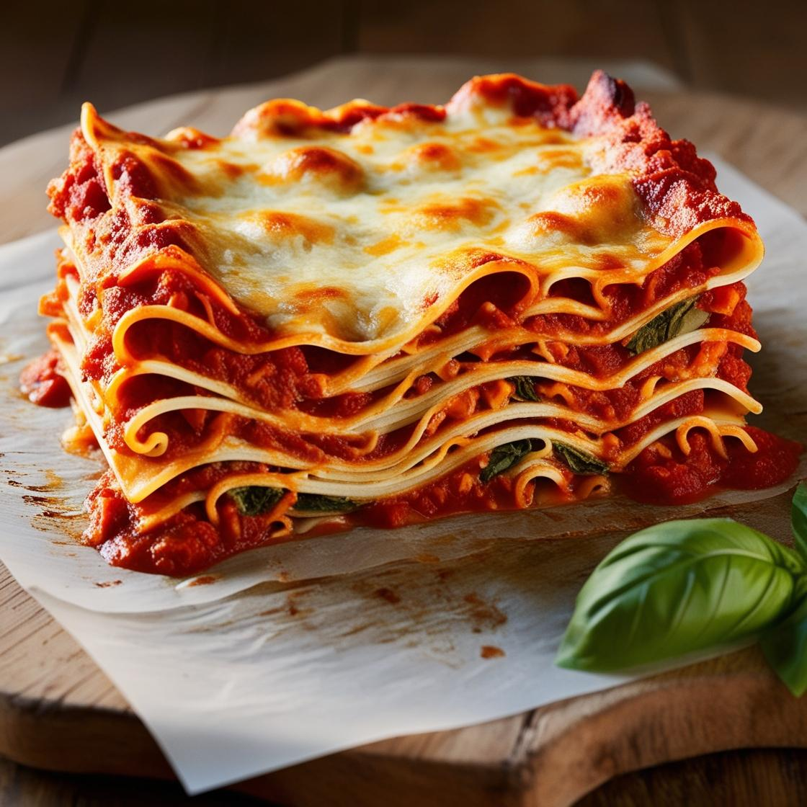

Lasagna

Nice and toasty lasagna
Looking for a lasagna that’s hearty, comforting, and guaranteed to impress?
This recipe layers rich, meaty marinara sauce, velvety béchamel, and perfectly
cooked pasta sheets, creating a symphony of flavors in every bite. Topped with
a golden, bubbly blanket of mozzarella and Parmesan, this dish is the perfect
centerpiece for family dinners, potlucks, or a cozy night in. Easy to customize
with your favorite ingredients, this lasagna will become a go-to classic in
your kitchen. One bite, and you'll know why this recipe stands out from the
rest!
Ingredients
Cheese Mixture
- 15 oz (425g) ricotta cheese
- 2 cups shredded mozzarella cheese (plus extra for topping)
- 1/2 cup grated Parmesan cheese
- 1 large egg
- 2 tablespoons fresh parsley, chopped (optional)
- 1/2 teaspoon salt
Meat sauce
- 1 lb (450g) ground beef
- 1 lb (450g) Italian sausage (casings removed)
- 1 medium onion, diced
- 3 cloves garlic, minced
- 1 (28 oz) can crushed tomatoes
- 1 (6 oz) can tomato paste
- 1 (15 oz) can tomato sauce
- 2 teaspoons dried basil
- 1 teaspoon dried oregano
- 1 teaspoon sugar
- Salt and pepper to taste
For Assembly
- 12 lasagna noodles (uncooked or oven-ready)
- 2 cups shredded mozzarella cheese (for topping)
Equipment
- Large skillet or sauté pan
- Medium mixing bowl
- 9x13-inch baking dish
- Wooden spoon or spatula
- Large pot (for boiling noodles, if not oven-ready)
- Aluminum foil
Instructions
Prepare the Meat Sauce
- Heat a large skillet over medium heat. Add ground beef
and Italian sausage, breaking them apart as they cook.
- Once browned, add diced onion and minced garlic. Cook
until the onions are translucent, about 3-4 minutes.
- Stir in crushed tomatoes, tomato paste, and tomato sauce.
Mix well.
- Add basil, oregano, sugar, and season with salt and pepper.
Reduce heat to low and let simmer for 20-30 minutes, stirring
occasionally.
Prepare the Cheese Mixture
- In a medium bowl, combine ricotta cheese, 2 cups mozzarella,
Parmesan cheese, egg, parsley, and salt. Mix until smooth and
set aside.
Assemble the Lasagna
- Preheat your oven to 375°F (190°C).
- Spread a thin layer of meat sauce on the bottom of a
9x13-inch baking dish.
- Layer 3-4 lasagna noodles over the sauce (overlapping slightly
if needed).
- Spread 1/3 of the ricotta mixture over the noodles, then top with
1/3 of the meat sauce.
- Repeat this process two more times: noodles, ricotta mixture,
meat sauce.
- Finish with a final layer of noodles and spread the remaining meat
sauce on top. Sprinkle generously with shredded mozzarella.
Bake
- Cover the dish with aluminum foil (sprayed with cooking spray to
prevent sticking).
- Bake for 25 minutes. Remove foil and bake for another 20-25 minutes,
until the cheese is melted, bubbly, and golden brown.
Rest and Serve
- Allow the lasagna to rest for 10-15 minutes before slicing. Serve
warm with your favorite side salad or garlic bread.
Enjoy your hearty, homemade lasagna!